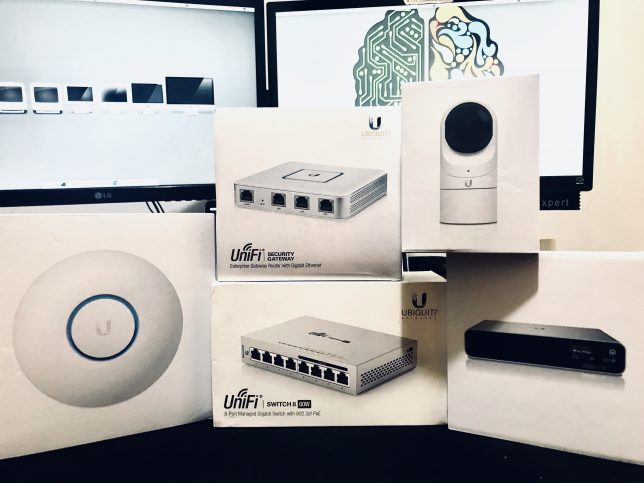
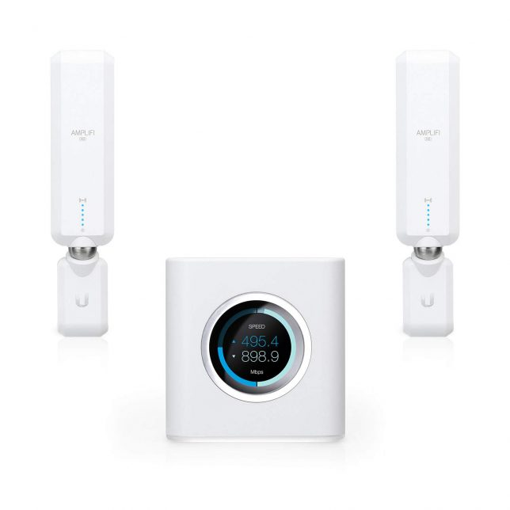

Novos equipamentos para o Lab - Ubiquiti Unifi
Compartilhe esse post nas redes sociais...

Olá Homelabers,
Na semana passada, recebi alguns equipamentos da Ubiquiti Brasil- obrigado Samuel (@shbbrito) beijo! - para testar e colocar em produção aqui no meu Homelab.
Os equipamentos são da linha Unifi, a mais nova e moderna linha de equipamentos da Ubiquiti, com um foco em SDN (Software Defined Network) ou seja, sua rede é toda controlada por software. Recomendo a leitura desse artigo do Mateus Wolff sobre SDN
Eu já conheço e uso equipamentos da Ubiquiti há muitos anos, e posso dizer que houve uma evolução espantosa nos últimos anos. A Ubiquiti é referência de equipamentos para redes Wifi, mas muita gente ainda desconhece toda sua linha de produto, que oferece soluções completas para networking. Arrisco a dizer que as soluções de redes wireless da Ubiquiti não ficam devendo nada para Cisco.
Aqui em casa, eu já utilizo o equipamento da linha Amplifi, que é composto por um roteador e 2 antenas, que formam uma rede mesh wifi. Tenho esse equipamento há exatamente um ano e resolvi totalmente o problema de cobertura e potência do sinal no meu apartamento, hoje consigo assistir filmes no Netflix em 4K na TV da sala usando o wifi - o que era antes impossível.
Update: Não estou mais utilizando o Amplifi. Agora toda a minha rede roda em cima da plataforma Unifi da Ubiquiti. Mas continuo recomendando o equipamento.

Mas voltando aos equipamentos que a Ubiquiti Brasil me mandou para testar:
Com esses equipamentos, vou poder fazer um revamp na rede do meu lab e principalmente fazer a separação física e lógica da rede do Lab e a rede de Produção (minha casa).
Ao longo do tempo, venho fazendo um downsizing no meu lab, eliminando equipamentos grandes - e que consomem muita energia elétrica - para equipamentos menores. O consumo de todos esses equipamentos da Ubiquiti JUNTOS não vai chegar perto do Switch Cisco de 48 portas que tenho rodando aqui hoje.
A change para colocar esse novo equipamento em produção já passou pelo CAB e está agendada para o próximo final de semana. :)
Update (28/02/2020) - A mudança foi realizada com sucesso, mas eu não atualizei o post.
Vou atualizando vocês com as novidades e posts sobre como fazer a instalação e configuração dos equipamentos e como vai ficar a rede do meu lab!
Se você quiser saber mais sobre os produtos da Ubiquiti, o time de Community Managers no Brasil tem um blog super bacana, com vários artigos em Português, o canal oficial no Youtube, um grupo no Telegram e o fórum oficial em Português no site da UBNT.
Mais uma vez, obrigado ao time da Ubiquiti Brasil.
Até a próxima!
Compartilhe esse post nas redes sociais...
Valdecir Carvalho
Nerd e pai orgulhoso da Mariana e João. Profissional Sênior de TI com foco em arquitetura de infraestrutura e cloud computing. Blogueiro, podcaster, palestrante, amante de comunidades técnicas, fotógrafo aposentado e adora jogos antigos.
#vExpert · #VMUGLeader · #VUGBrasil · #vBronwBagBrasil · #VeeamVanguard